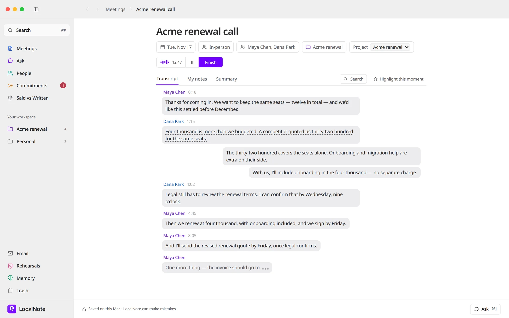

Offline meeting notes
Meeting notes that never leave your computer
Most meeting tools send your conversations to the cloud to be transcribed. Proofaro does the work on your own computer instead — recording, transcription and summaries all happen on-device, so your meetings work in airplane mode, and recordings and transcripts are never uploaded for processing — they stay on your computer.

Transcription that runs on your device
Proofaro captures the call from your computer — no meeting bot ever joins, so nobody on the call sees an extra participant. The speech-to-text models are downloaded once during setup; after that, transcription runs locally. Proofaro works fully offline after a one-time setup download: on a plane, in a client office with locked-down Wi-Fi, or anywhere you would rather not be connected.
- Bot-free recording for calls and for in-person conversations in the room.
- Speaker labels so you can see who said each line.
- Recording recovery — if a recording is interrupted, the audio captured before the interruption is restored, not lost.
- Summaries, decisions and search across all your meetings, still on your machine.
Private by architecture, not by promise
Proofaro operates no server that receives your meeting data: recordings and transcripts are processed and stored on your computer, never uploaded for processing. Recordings, transcripts and notes are stored on your computer, and you can delete any of them at any time. Read more in our Privacy Policy and on the Security page, which also explains honestly what is and is not encrypted.
More than a transcript
A transcript is the starting point. Proofaro also checks what was agreed against what later gets written — see Said vs Written — and keeps every promise in one tracked list, see commitment tracking. Coming from a cloud notetaker? Compare Proofaro with Granola.
Try Proofaro free during early access
Proofaro is invite-only while we onboard the first users in small waves. Request an invite and we will write to you at the address you give us.
Request Invite →